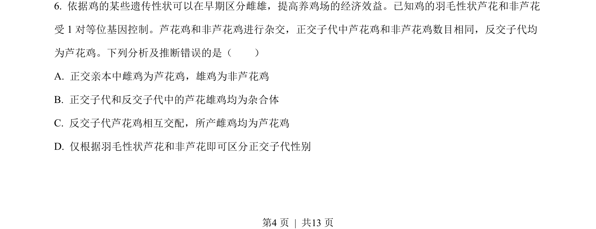
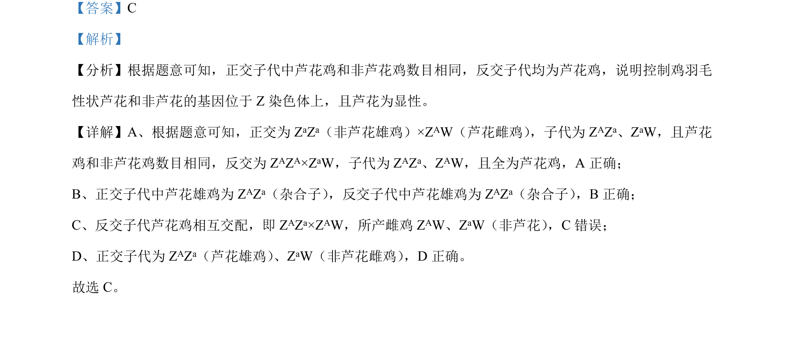

2022-全国乙-06
考点：伴性遗传 ZW型性别决定 基因显隐性 杂交实验
题面


摘要
该题通过正交与反交实验，考查鸡羽毛性状的伴性遗传方式及基因型推断。
关联考点
答案与解析

📄 原 PDF 第 4 页：
素材/真题/吉林/2008-2024·（吉林）生物高考真题/2022年高考生物试卷（全国乙卷）（解析卷）.pdf
题干文本
- 依据鸡的某些遗传性状可以在早期区分雌雄，提高养鸡场的经济效益。已知鸡的羽毛性状芦花和非芦花 受 1 对等位基因控制。芦花鸡和非芦花鸡进行杂交，正交子代中芦花鸡和非芦花鸡数目相同，反交子代均 为芦花鸡。下列分析及推断错误的是（ ） A. 正交亲本中雌鸡为芦花鸡，雄鸡为非芦花鸡 B. 正交子代和反交子代中的芦花雄鸡均为杂合体 C. 反交子代芦花鸡相互交配，所产雌鸡均为芦花鸡 D. 仅根据羽毛性状芦花和非芦花即可区分正交子代性别 的